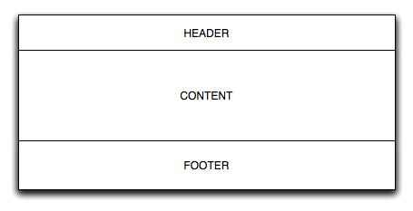

This markup inheritance example show you how to create reusable page layouts and panel layouts.
In all the Wicket examples, you have to put all files in the same package
directory. This means putting the markup files and the java files next to one
another. It is possible to alter this behavior, but that is beyond the scope
of this example. The only exception is the obligatory web.xml file which
should reside in the WEB-INF/ directory of your web application root
folder.
In this example we assume you already have read and understood the other examples which give you information on the structure and nature of Wicket applications. Specifically read and understand the Hello, World example.
Page layout
In the next figure we show a standard strategy for laying out a page. A standard header, the main content body and a standard footer.

In Wicket you can achieve this using different strategies. This article focuses on one strategy: markup inheritance.
What is markup inheritance?
In Java you can extend classes. This same concept has been fitted into the markup parsing of Java. Markup containers that have files associated (page and panels) can inherit the markup of their super containers.
This is done using two special Wicket tags: <wicket:child> and
<wicket:extend>. In the super markup you define where the child markup
should be put, and in the sub markup you delineate where the child markup
starts and ends.
<html>
<head></head>
<body>
This is in the super markup.<br>
<wicket:child />
This is in the super markup.<br>
</body>
</html>In this markup you see two sentences that surround the <wicket:child> tag.
All markup in this file will remain when a sub class of this page is created,
only the <wicket:child> tag will be replaced with the child markup. So if we
look at the following markup:
<html>
<head></head>
<body>
This is in de child markup.<br>
<wicket:extend>
This is in the child markup.<br>
</wicket:extend>
This is in the child markup.<br>
</body>
</html>we can see the markup that should be included in the parent. Only the markup
between the <wicket:extend> tags is included in the final page. Take a look
at the following markup which is the final markup when you would use this in
a Wicket application.
<html>
<head></head>
<body>
This is in the super markup.<br>
<wicket:child><wicket:extend>
This is in the child markup.<br>
</wicket:extend></wicket:child>
This is in the super markup.<br>
</body>
</html>Here you can see that the <wicket:child /> tag has been expanded, and its
contents filled with exactly the markup between the <wicket:extend> tags.
If you want to get rid of the special Wicket tags, you can disable that on
the markup settings
(see IMarkupSettings for Wikcet6
or MarkupSettings for Wicket 7 or MarkupSettings for Wicket 8).
Implementing the BasePage
Now that we have seen the basics for markup inheritance, we can take a look at the example at hand. Let’s first create the base page.
package wicket.quickstart;
import wicket.markup.html.WebPage;
import wicket.markup.html.basic.Label;
import wicket.markup.html.link.BookmarkablePageLink;
public abstract class BasePage extends WebPage {
public BasePage() {
add(new BookmarkablePageLink("page1", Page1.class));
add(new BookmarkablePageLink("page2", Page2.class));
add(new Label("footer", "This is in the footer"));
}
}The two links should go into the header, and the footer in the footer of the page. Note that the abstract keyword isn’t required, but considered a good practise. Now let’s take a look at the markup for the BasePage
<html>
<head></head>
<body>
<div id="header">
<a href="#" wicket:id="page1">Page1</a>
<a href="#" wicket:id="page2">Page2</a>
</div>
<div id="body">
<wicket:child />
</div>
<div id="footer">
<span wicket:id="footer"></span>
</div>
</body>
</html>In this markup file you see the specific basic layout: we have 3 div elements:
<div id="header">...</div><div id="body">...</div><div id="footer">...</div>
Note that these aren’t Wicket components, just plain markup. We could have
made them components, such as a Panel but for brevity we keep it this way.
Now that we have the BasePage finished, we can implement the two subclasses
to finish this example.
Implementing the sub pages
We need to build two pages: Page1 and Page2. Each page needs its own
markup file and Java class. Let’s first implement Page1.
package wicket.quickstart;
import wicket.markup.html.basic.Label;
public class Page1 extends BasePage {
public Page1() {
add(new Label("label1", "This is in the subclass Page1"));
}
}In this example you see that we add a new label component to the page:
label1. This component is only available for Page1, as such Page2 can
define its own component hierarchy. Let’s take a look at the markup for
Page1:
<html>
<head></head>
<body>
<wicket:extend>
<h1>Page1</h1>
<span wicket:id="label1"></span>
</wicket:extend>
</body>
</html>Here you see that we added the Label component in the markup between the
<wicket:extend> tags. If we were to add the component outside those tags,
Wicket will not be able to render the component in the final page.
Now, let’s do the same for Page2.
package wicket.quickstart;
import wicket.markup.html.basic.Label;
public class Page2 extends BasePage {
public Page2() {
add(new Label("label2", "This is in the subclass Page2"));
}
}<html>
<head></head>
<body>
<wicket:extend>
<h1>Page2</h1>
<span wicket:id="label2"></span>
</wicket:extend>
</body>
</html>In Page2 you see that we have a different component structure (label2
instead of label1), and as such that the pages are quite different.
If you paste this code into a Wicket quickstart application, you can see it
immediately working (don’t forget to set the homepage to Page1 or Page2).
Conclusion
With markup inheritance you can get a standard layout for your application without too much hassle. It follows the natural inheritance strategy for Java code and makes encapsulation of your component hierarchy possible.
In this example we haven’t touched on the other possible features of markup inheritance:
- contributing to the
<head>section from your sub pages - multiple layers of inheritance (this just works)
- markup inheritance used with
Panelcomponents
However, this example should get you up and running.